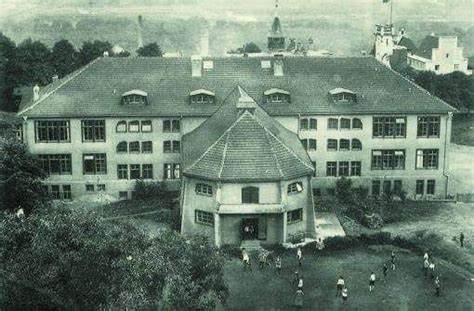
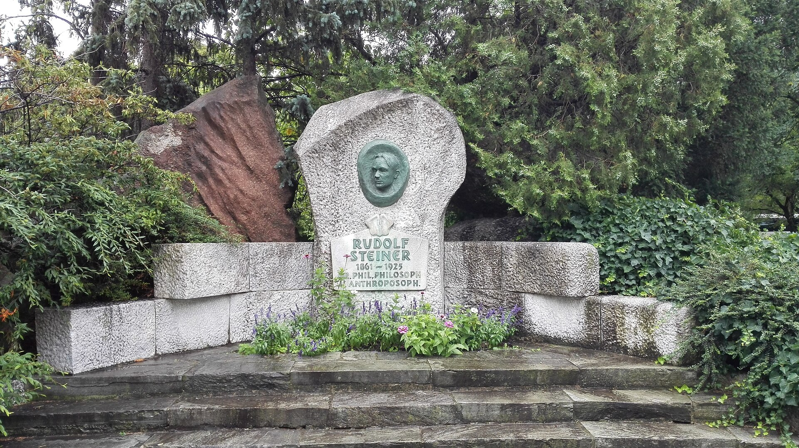

Photo Gallery



1861 - 1925
Philosopher, Social Reformer, Architect, and Founder of Anthroposophy
Steiner's spiritual philosophy that integrates scientific methodology with inner development and spiritual insight.
A holistic educational approach that nurtures the physical, emotional, and spiritual development of children.
An innovative approach to organic farming that treats farms as unified organisms.
1894
A foundational work exploring human consciousness and freedom.
1904
A practical guide to spiritual development and inner transformation.
1909
A comprehensive presentation of anthroposophical teachings.
1907
Foundational text for Waldorf education methodology.
A masterpiece of organic architecture carved primarily from wood, the First Goetheanum embodied Steiner's principle of metamorphosis in architecture. Though destroyed by fire in 1922, its innovative design influenced architectural thinking worldwide.
Built in concrete, the Second Goetheanum represents a revolutionary approach to architectural form. Its sculptural qualities and innovative use of concrete continue to inspire architects and artists today.
A unique example of Steiner's architectural principles applied to a smaller scale, featuring his characteristic use of angular forms and innovative treatment of materials.
Born in Kraljevec, Austrian Empire (modern-day Croatia)
Studies at the Vienna Institute of Technology
Becomes leader of the German Section of the Theosophical Society
Founds the Anthroposophical Society
Establishes the first Waldorf School in Stuttgart
Passes away in Dornach, Switzerland